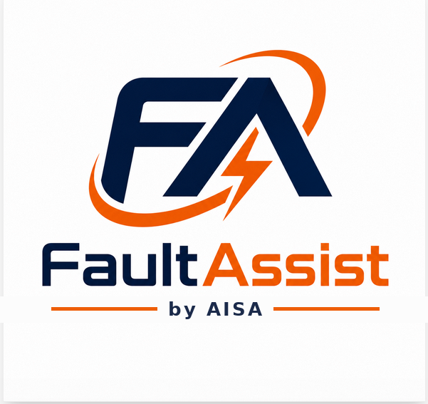

A difficult system problem remains unresolved.
Failures, unstable operation, or process conditions continue despite repeated corrective efforts.
AISA · Industrial Systems Advisory
AISA supports manufacturers, water and wastewater utilities, OEMs, and engineering teams where equipment, controls, instrumentation, process, reliability, people, and implementation intersect.
Why organizations call AISA
AISA brings more than 30 years of cross-sector plant-floor and utility experience to situations that require broader technical judgment than one department, vendor, or specialty can provide.
Failures, unstable operation, or process conditions continue despite repeated corrective efforts.
Leadership needs an independent view before committing capital, accepting equipment, or selecting a technical path.
Design intent, controls, field conditions, documentation, vendors, and operations are not aligned.
Technicians, operators, engineers, or OEM service teams need better support without losing human authority.
Advisory services
AISA can support a single issue, a defined project, or a broader capability need. FaultAssist™ is available when it fits—not as a condition of engagement.
Complex equipment, process, controls, utility, and recurring-failure investigations.
Independent technical support for capital planning, equipment selection, OEM review, and project definition.
Support from design intent through startup, acceptance, stabilization, and production handoff.
Practitioner-centered support systems that strengthen reasoning, documentation, and equipment lifecycle support.
Industries and operating environments
AISA is not limited to one industry or one equipment class. The common ground is complex industrial work where systems must operate safely, reliably, and clearly.
Production equipment, material handling, thermal systems, process controls, utilities, packaging, inspection, and maintenance support.
Pumps, valves, chemical feed, instrumentation, PLC/HMI/SCADA, treatment processes, collection systems, and modernization.
Design review, commissioning, serviceability, customer support, installed-base knowledge, and lifecycle capability.
Compressed air, steam, water, power distribution, pumping, controls, alarms, and supporting infrastructure.

A proprietary capability
FaultAssist™ works alongside the practitioner, offering sound diagnostic direction, preserving human judgment, capturing the event, and strengthening future response.
Supports reasoning rather than replacing the technician.
Uses governed equipment and domain knowledge.
Maintains safety, authority, and truthfulness boundaries.
Captures a structured cradle-to-grave troubleshooting record.
Can strengthen manufacturing, utility, and OEM support environments.
Start with the need
The first conversation is practical and confidential. Describe the operating need, the system involved, and what outcome matters most.
Email: randy@aflegacygroup.com
Phone: 540.505.6113
Location: Edgewood, Washington
Focus: manufacturing, water, wastewater, utilities, OEMs, engineering, maintenance, operations, and reliability leadership